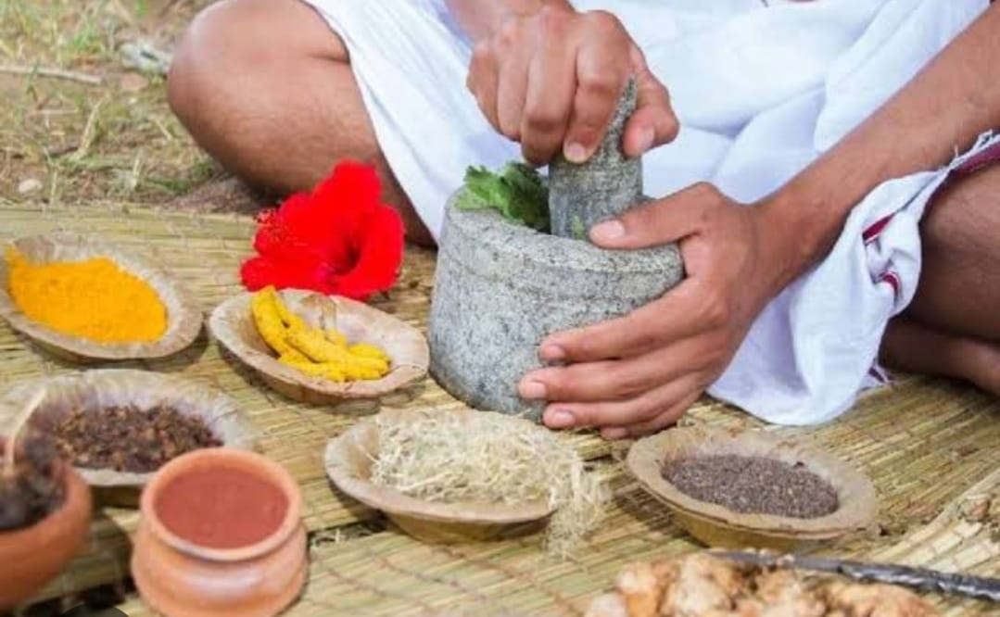
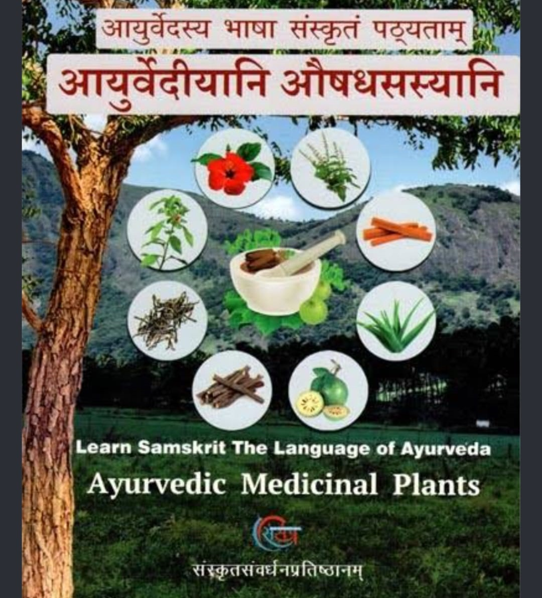
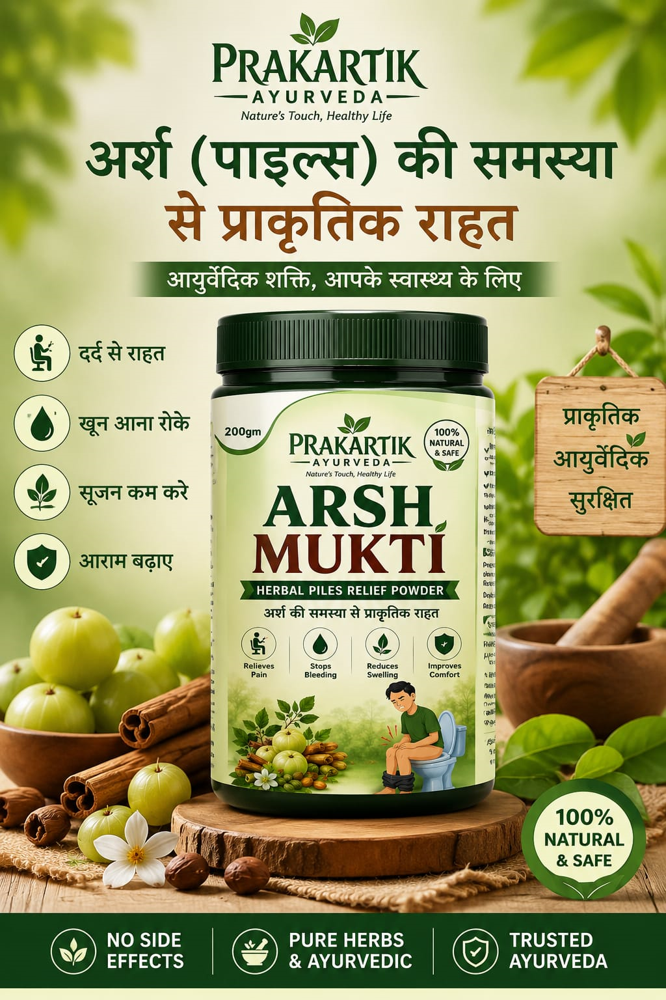

Ayurveda is a traditional system of medicine that originated in India, focusing on a holistic balance between the mind, body, and spirit. The word Ayurveda comes from Sanskrit and is commonly translated as "the science of life." Rather than focusing only on symptoms, Ayurveda traditionally emphasizes personalized diets, herbal preparations, massage therapies, and lifestyle practices to support overall wellness and harmony with nature.
According to Ayurvedic principles, everyone is believed to have a unique energy framework associated with five elements: space, air, fire, water, and earth. These elements are traditionally described through three primary vital energies, known as Doshas. Ayurvedic traditions associate imbalance in these energies with changes in health and wellbeing.
Associated with Space and Air. Traditionally related to movement, circulation and breathing.
Associated with Fire and Water. Traditionally related to digestion, metabolism and the body's heating processes.
Associated with Water and Earth. Traditionally related to physical structure, stability and growth.
Ayurvedic practitioners may create personalized wellness plans based on an individual's needs and traditional Ayurvedic principles. Common practices include:
Ayurveda is widely practiced in India and its popularity has expanded internationally as a complementary wellness approach. In India, Ayurveda is part of the country's formal systems of traditional medicine and practitioners receive institutional training.
Users should choose Ayurvedic products carefully and pay attention to product quality, labeling and responsible sourcing. Some improperly manufactured or unvetted herbal products may contain contaminants or make unsupported health claims. It is advisable to consult a qualified healthcare professional before using herbal products, particularly when taking conventional medicines or managing an existing health condition.
Explore traditional Ayurvedic herbs and preparations.

Traditional Ayurvedic herbs and ingredients.
Traditional Ayurvedic preparation.

Traditional herbal preparation.
प्राकृतिक स्वास्थ्य की ओर एक कदम
Natural Wellness • Ayurvedic Care

Ayurvedic Herbal Powder
📦 Net Weight: 200 Gram
📞 Call Now 💬 WhatsApp Us 🛒 Order NowPrakartik Ayurveda आयुर्वेदिक एवं हर्बल वेलनेस उत्पादों की जानकारी उपलब्ध कराता है।
9911724667